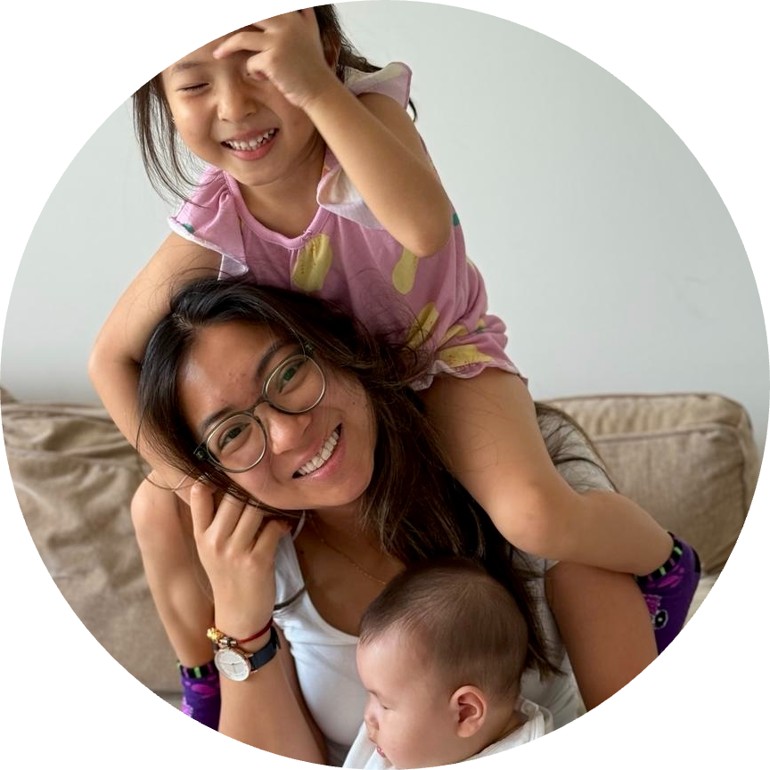

some thoughts
(in spanish)

historias de mi diario

viajando y un poco sobre mí
febrero 2024
Siempre que viajo sola siento nostalgia y añoración, tristeza y alegría— sentimientos encontrados y confusos. Los aeropuertos son espacios donde encuentras personas de todas partes del mundo que dejan lo conocido para ir a un lugar nuevo. Me imagino cómo son sus vidas y reflexiono sobre la mía. Pasé esta semana en Boston con mi enamorado y hoy he estado volando hacia Hong Kong para visitar a mis abuelos, quienes no veo hace cinco años. Ha sido un vuelo largo, de quince horas para llegar a Seoul y tres más para Hong Kong, por lo cual se me ocurrió escribir mis reflexiones y compartirlas en este blog :)
Antes de ir a Boston pasé dos meses en Lima, Perú. Me gradué de University of Waterloo en diciembre y finalmente regresé a casa por más de dos semanas. He vivido en varias ciudades estos últimos cuatro años, mudándome casi cada cuatro meses— estudiando en Waterloo y trabajando como practicante desde Toronto hasta California. He perdido la cuenta de cuántas veces me he mudado, pero como buen migrante tengo todos mis vuelos anotados para los papeleos necesarios que piden al aplicar a visas. Lo que más aprecio de haber vivido en tantos lugares han sido las personas que he conocido, ya que he aprendido mucho de ellas y me han ayudado a crecer como persona, amiga, estudiante, y profesional.
El haber crecido en Latinoamérica formó mi personalidad, el ser amigable y cariñosa, el hablar un idioma romántico, el apreciar el tiempo de calidad con otros, el querer bailar cuando hay buena música, y el ser influenciada por la cultura americana. Me identifico china por los valores y tradiciones que aprendí en casa, especialmente el servirle té a todos antes que a mí y el dar todo mi esfuerzo siempre para mostrar aprecio a mis papás por todo lo que han sacrificado para darme infinitas oportunidades educativas. Ahora que he vivido cuatro años en Canadá, me siento una persona internacional y flexible que puede vivir en cualquier lado del mundo pero con un añoro creciente de cada persona y lugar que dejo atrás. Cada vez que me tengo que introducir a alguien me cuesta hacerlo en pocas palabras, pero me enorgullece contar mi historia y me encanta, me fascina que otras personas me cuenten sobre sus culturas y familias cuando les pregunto de vuelta.
Veo a este blog como un espacio para compartir mis experiencias de vida. Si has crecido con diferentes culturas, eres migrante, eres una chica gen Z, o te identificas de alguna manera con lo que cuento, espero que leyendo esto no te sientas solo! O tal vez no tenemos mucho en común, y mis historias te ayuden a explorar un mundo distinto al tuyo :)